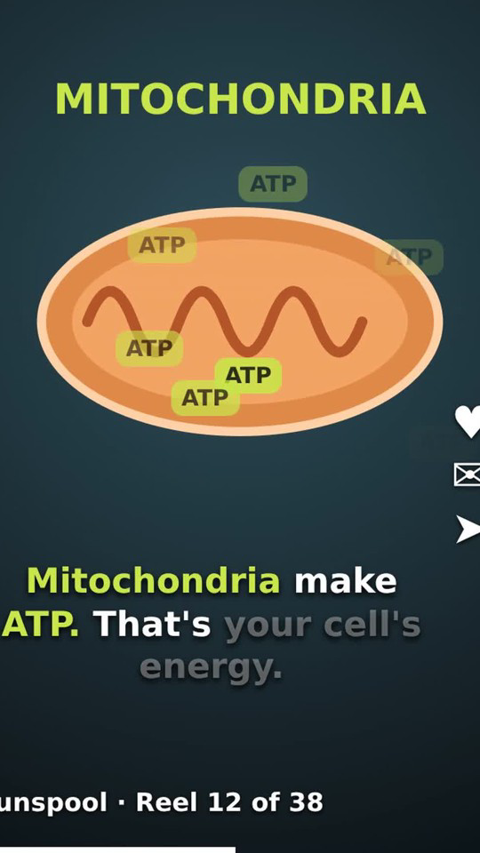

<!doctype html>
<html><head><meta charset="utf-8">
<style>
@font-face { font-family: Arc; src: url(Archivo-ExtraBold.ttf); }
html, body { margin: 0; width: 720px; height: 1280px; overflow: hidden; background: #8fd0ff; }
#s { position: absolute; inset: 0; overflow: hidden; font-family: Arc; }
svg { position: absolute; left: 0; top: 0; }
</style></head>
<body><div id="s"></div>
<script type="module">
// "Only 1% can pause all 3 in the frame!" A pause challenge: three study things fly past a hand-drawn red frame,
// each one inside it for a single frame. Near-misses freeze with "SO CLOSE", the last one lands: "YOU DID IT!".
const TL = await (await fetch("tl.json")).json(); const DUR = TL.dur; window.DUR = DUR;
const S = document.getElementById("s");
const clamp = (x, a = 0, b = 1) => Math.max(a, Math.min(b, x));
const ease = (x) => 1 - Math.pow(1 - clamp(x), 3);
const outBack = (x) => { x = clamp(x); const c = 1.7; return 1 + (c + 1) * Math.pow(x - 1, 3) + c * Math.pow(x - 1, 2); };
const mix = (a, b, k) => a + (b - a) * k;
const O = "#14121c", LIME = "#d3f05a";
const A = (x, y, inner, extra = "") => `<div style="position:absolute;left:${x}px;top:${y}px;${extra}">${inner}</div>`;
const svg = (inner) => `<svg width="720" height="1280" viewBox="0 0 720 1280">${inner}</svg>`;
const FX = 360, FY = 470;                         // the frame's centre

// ---------- the three things that fly through ----------
const phone = `<g><rect x="-48" y="-92" width="96" height="184" rx="16" fill="#111" stroke="${O}" stroke-width="5"/>
  <foreignObject x="-42" y="-84" width="84" height="168"><div xmlns="http://www.w3.org/1999/xhtml" style="width:84px;height:168px;border-radius:10px;overflow:hidden"></div></foreignObject></g>`;
const bookObj = (t) => { const f = Math.sin(t * 22) * 0.5 + 0.5; return `<g><path d="M0 -10 L-100 -40 L-100 60 L0 90 Z" fill="#fff" stroke="${O}" stroke-width="5" stroke-linejoin="round"/><path d="M0 -10 L100 -40 L100 60 L0 90 Z" fill="#fff" stroke="${O}" stroke-width="5" stroke-linejoin="round"/>
  <path d="M0 -10 L${-100 + 200 * f} ${-40 - 40 * Math.sin(f * Math.PI)} L${-100 + 200 * f} ${60 - 40 * Math.sin(f * Math.PI)} L0 90 Z" fill="#f4f1e6" stroke="${O}" stroke-width="4" stroke-linejoin="round"/>
  <path d="M0 -10 L-112 -46 L-112 66 L0 100 L112 66 L112 -46 Z" fill="none" stroke="#2e8b57" stroke-width="10" stroke-linejoin="round"/>
  <text x="-50" y="30" text-anchor="middle" font-family="Arc" font-size="26" fill="#2e8b57" transform="skewY(17)">BIO</text></g>`; };
const paperObj = `<g><rect x="-74" y="-96" width="148" height="192" rx="6" fill="#fff" stroke="${O}" stroke-width="5"/>
  ${[0, 1, 2, 3].map((i) => `<rect x="-56" y="${-10 + i * 22}" width="${[100, 80, 92, 64][i]}" height="8" rx="4" fill="#c8ccd4"/>`).join("")}
  <circle cx="20" cy="-48" r="38" fill="none" stroke="#22c55e" stroke-width="8"/><text x="20" y="-34" text-anchor="middle" font-family="Arc" font-size="42" fill="#22c55e">A+</text>
  <text x="-56" y="-62" font-family="Arc" font-size="14" fill="#16314f">BIO TEST</text></g>`;
// each object: flies in from far away, crosses the frame centre at tc (exactly one frame dead centre), then keeps going
const OBJ = [
  { draw: () => phone, t0: 0.0, tc: 1.5, t1: 2.5, from: [600, 980, 0.12], to: [40, 140, 1.6], size: 1.0, spin: -12, miss: [24, -18], near: "SO CLOSE 😬", sub: "2 frames off..." },
  { draw: bookObj, t0: 2.5, tc: 4.0, t1: 4.75, from: [90, 1000, 0.1], to: [360, 640, 9.0], size: 0.95, spin: 10, miss: [-14, 10], near: "SOOOO CLOSE 😱", sub: "1 frame off!" },
  { draw: () => paperObj, t0: 4.75, tc: 6.5, t1: 7.6, from: [640, 900, 0.1], to: [120, 120, 2.2], size: 0.95, spin: -8, miss: [0, 0], near: "YOU DID IT! 🥳", sub: "" },
];
function objAt(o, t) {   // position + scale: a curve that passes the frame centre at tc
  if (t < o.t0 || t > o.t1) return null;
  if (t <= o.tc) { const k = (t - o.t0) / (o.tc - o.t0), e = k * k * (3 - 2 * k) * 0.35 + k * k * 0.65;
    return { x: mix(o.from[0], FX, e) + Math.sin(k * Math.PI) * 60, y: mix(o.from[1], FY, e) - Math.sin(k * Math.PI) * 80, s: mix(o.from[2], o.size, Math.pow(k, 2.2)), r: (1 - k) * o.spin * 3 }; }
  const k = (t - o.tc) / (o.t1 - o.tc), e = k * k;
  return { x: mix(FX, o.to[0], e), y: mix(FY, o.to[1], e), s: mix(o.size, o.to[2], Math.pow(k, 1.6)), r: k * o.spin * 4 };
}

// ---------- the world: sky, a clock tower, a sunny school ----------
function world(t) {
  const cloud = (x, y, s) => `<g transform="translate(${x} ${y}) scale(${s})" opacity=".95"><ellipse cx="0" cy="0" rx="90" ry="34" fill="#fff"/><ellipse cx="-50" cy="8" rx="60" ry="26" fill="#fff"/><ellipse cx="55" cy="10" rx="66" ry="26" fill="#fff"/><ellipse cx="10" cy="-26" rx="56" ry="34" fill="#fff"/></g>`;
  const drift = (t * 14) % 900;
  let h = `<defs><linearGradient id="sky" x1="0" y1="0" x2="0" y2="1"><stop offset="0" stop-color="#4aa8f0"/><stop offset=".7" stop-color="#a9dcff"/><stop offset="1" stop-color="#d9f1ff"/></linearGradient></defs>
    <rect width="720" height="1280" fill="url(#sky)"/>
    ${cloud(620 - drift * 0.6, 260, 1.1)}${cloud(1200 - drift * 0.6, 420, 0.8)}${cloud(260 - drift * 0.4, 720, 1.3)}${cloud(1000 - drift * 0.4, 820, 1.0)}${cloud(140 - drift * 0.3 + 900, 560, 0.7)}`;
  // a tall clock tower on the left
  h += `<g><rect x="40" y="200" width="120" height="900" fill="#d9e3ee" stroke="#9fb3c8" stroke-width="4"/>${Array.from({ length: 30 }, (_, i) => `<path d="M40 ${230 + i * 30} L160 ${230 + i * 30}" stroke="#b8c8d8" stroke-width="3"/>`).join("")}
    <path d="M30 200 L100 60 L170 200 Z" fill="#7aa0c4" stroke="#5a7fa3" stroke-width="4"/><circle cx="100" cy="270" r="40" fill="#fff" stroke="#5a7fa3" stroke-width="6"/>
    <path d="M100 270 L100 ${270 - 28} M100 270 L${100 + Math.cos(t) * 20} ${270 + Math.sin(t) * 20}" stroke="${O}" stroke-width="5" stroke-linecap="round"/><path d="M100 60 L100 20" stroke="#5a7fa3" stroke-width="6"/></g>`;
  // the school along the bottom
  h += `<rect x="0" y="1010" width="720" height="270" fill="#8bd16a"/><rect x="0" y="1150" width="720" height="130" fill="#e7d9b5"/>
    <g><rect x="170" y="820" width="380" height="200" fill="#f6c1d0" stroke="${O}" stroke-width="5"/><path d="M150 830 L360 700 L570 830 Z" fill="#e8743b" stroke="${O}" stroke-width="5" stroke-linejoin="round"/>
    ${[0, 1, 2, 3].map((i) => `<rect x="${200 + i * 88}" y="860" width="50" height="60" fill="#bfe4f6" stroke="${O}" stroke-width="4"/>`).join("")}
    <rect x="320" y="930" width="80" height="90" fill="#8a5a3b" stroke="${O}" stroke-width="5"/>
    <rect x="230" y="760" width="260" height="46" rx="10" fill="#1d3557" stroke="${O}" stroke-width="4"/><text x="360" y="792" text-anchor="middle" font-family="Arc" font-size="24" fill="#fff">UNSPOOL HIGH</text>
    <rect x="80" y="880" width="90" height="140" fill="#cbb5f0" stroke="${O}" stroke-width="5"/><path d="M70 890 L125 820 L180 890 Z" fill="#8b5cf6" stroke="${O}" stroke-width="5" stroke-linejoin="round"/>
    <rect x="550" y="880" width="90" height="140" fill="#bde7ff" stroke="${O}" stroke-width="5"/><path d="M540 890 L595 820 L650 890 Z" fill="#3a86d4" stroke="${O}" stroke-width="5" stroke-linejoin="round"/>
    ${[110, 250, 470, 610].map((x) => `<circle cx="${x}" cy="1040" r="34" fill="#4caf50" stroke="${O}" stroke-width="4"/><rect x="${x - 5}" y="1060" width="10" height="30" fill="#7a5230"/>`).join("")}</g>`;
  return h;
}
// a stick figure in the corner, watching
function watcher(t, mood) {
  const jump = mood === "win" ? Math.abs(Math.sin(t * 10)) * 26 : 0, armsUp = mood === "win" || mood === "close";
  const face = mood === "win" ? `<path d="M-18 -4 Q-12 -12 -6 -4 M6 -4 Q12 -12 18 -4" stroke="${O}" stroke-width="5" fill="none" stroke-linecap="round"/><path d="M-14 10 Q0 30 14 10 Z" fill="#7a2230"/>`
    : mood === "close" ? `<circle cx="-14" cy="-6" r="9" fill="#fff" stroke="${O}" stroke-width="4"/><circle cx="14" cy="-6" r="9" fill="#fff" stroke="${O}" stroke-width="4"/><circle cx="-14" cy="-6" r="3"/><circle cx="14" cy="-6" r="3"/><path d="M-12 18 Q0 10 12 18" stroke="${O}" stroke-width="5" fill="none"/>`
    : `<circle cx="-14" cy="-4" r="5"/><circle cx="14" cy="-4" r="5"/><path d="M-8 16 L8 16" stroke="${O}" stroke-width="5" stroke-linecap="round"/>`;
  const arms = armsUp ? `M-30 -150 L-60 -210 M30 -150 L60 -210` : `M-30 -150 L-44 -90 M30 -150 L44 -90`;
  return `<g transform="translate(610 ${1235 - jump}) scale(.78)"><path d="M-12 -100 L-18 0 M12 -100 L18 0" stroke="${O}" stroke-width="10" stroke-linecap="round"/><path d="${arms}" stroke="${O}" stroke-width="10" stroke-linecap="round"/>
    <path d="M-32 -190 Q-34 -200 -20 -204 L20 -204 Q34 -200 32 -190 L38 -96 L-38 -96 Z" fill="#1d1b26" stroke="${O}" stroke-width="5"/>
    <circle cx="0" cy="-252" r="46" fill="#fff" stroke="${O}" stroke-width="6"/><path d="M-4 -298 Q-2 -326 16 -320 Q2 -314 6 -298" fill="${O}"/><g transform="translate(0 -252)" fill="${O}">${face}</g></g>`;
}
const frameShape = `<path d="M${FX - 150} ${FY - 110} C${FX - 60} ${FY - 128}, ${FX + 70} ${FY - 120}, ${FX + 150} ${FY - 112} C${FX + 162} ${FY - 40}, ${FX + 158} ${FY + 50}, ${FX + 154} ${FY + 112} C${FX + 60} ${FY + 124}, ${FX - 70} ${FY + 120}, ${FX - 152} ${FY + 110} C${FX - 162} ${FY + 30}, ${FX - 160} ${FY - 50}, ${FX - 150} ${FY - 110} Z M${FX + 150} ${FY - 112} q14 6 8 22 M${FX + 154} ${FY + 112} q16 -2 12 -18" fill="none" stroke="#ff2b2b" stroke-width="11" stroke-linecap="round" stroke-linejoin="round"/>`;
const popText = (x, y, big, sub, k, rot = -6) => A(x, y, `<div style="width:520px;text-align:center;transform:rotate(${rot}deg) scale(${outBack(k)});opacity:${clamp(k * 3)}">
  <div style="font:800 54px Arc;white-space:nowrap;color:#fff;-webkit-text-stroke:7px ${O};paint-order:stroke">${big}</div>${sub ? `<div style="font:800 34px Arc;white-space:nowrap;color:#fff;-webkit-text-stroke:6px ${O};paint-order:stroke;margin-top:-2px">${sub}</div>` : ""}</div>`);

window.renderAt = (t) => {
  let g = world(t), over = "";
  // the near-miss freezes: the object "paused" just off-centre in the frame, then SO CLOSE
  let freeze = null; OBJ.forEach((o, i) => { const d = t - o.tc; if (d > 0.08 && d < (i === 2 ? 99 : 0.75)) freeze = { o, i, d }; });
  let mood = "watch";
  OBJ.forEach((o, i) => { if (freeze && freeze.i === i) return; const p = objAt(o, t); if (!p) return;
    g += `<g transform="translate(${p.x} ${p.y}) rotate(${p.r}) scale(${p.s})">${o.draw(t)}</g>`; });
  g += frameShape;
  if (freeze) { const { o, i, d } = freeze; const k = d - 0.08, win = i === 2;
    mood = win ? "win" : "close";
    g += `<g transform="translate(${FX + o.miss[0]} ${FY + o.miss[1]}) rotate(${o.miss[0] ? 6 : 0}) scale(${o.size * (1 + 0.06 * Math.max(0, 1 - k / 0.15))})">${o.draw(o.tc)}</g>`;
    g += `<rect width="720" height="1280" fill="#fff" opacity="${Math.max(0, 1 - k / 0.1) * 0.6}"/>`;
    over += popText(100, win ? 610 : 520, o.near, o.sub, k / 0.25, win ? -4 : -6); }
  g += watcher(t, mood);
  // the one that comes straight at you
  const b = OBJ[1], bk = (t - 4.4) / 0.35;
  if (bk > 0 && bk < 1) g += `<g transform="translate(${360} ${mix(560, 700, bk)}) rotate(${bk * 20}) scale(${mix(2, 12, bk * bk)})">${bookObj(t)}</g>`;
  over = A(60, 70, `<div style="width:600px;text-align:center;font:800 46px/1.15 Arc;color:#fff;text-shadow:0 3px 0 rgba(0,0,0,.35),0 0 12px rgba(0,0,0,.25)">Only <span style="color:#ffd23f">1%</span> can pause<br>all 3 in the frame!</div>`) + over;
  // after the win: the comment ask and the link
  const w = t - (OBJ[2].tc + 0.5);
  if (w > 0 && t < 8.3) over += A(110, 196, `<div style="width:500px;font:800 36px/1.15 Arc;color:#fff;-webkit-text-stroke:6px ${O};paint-order:stroke;transform:rotate(-3deg);text-align:center">Comment <span style="color:${LIME}">UNSPOOL</span><br>+ screenshot it 📸</div>`, `opacity:${clamp(w * 4)};transform:scale(${outBack(w / 0.3)})`)
    + A(110, 820, `<div style="width:500px;text-align:center"><span style="display:inline-block;background:${LIME};color:#0f1d18;border:4px solid ${O};border-radius:999px;padding:12px 26px;font:800 28px Arc">Turn notes into TikToks · unspool.cc</span></div>`, `opacity:${clamp((w - 0.3) * 4)};transform:scale(${outBack((w - 0.3) / 0.3)})`);
  // outro: everything dims, the logo pulses
  const oz = t - 8.3;
  if (oz > 0) { const hue = (oz * 140) % 360;
    over += `<div style="position:absolute;inset:0;background:rgba(10,12,20,${0.72 * ease(oz / 0.3)})"></div>`
      + A(160, 500, `<div style="width:400px;text-align:center;transform:scale(${outBack(oz / 0.35)})"><div style="display:inline-block;width:120px;height:120px;border-radius:30px;background:linear-gradient(135deg,${LIME},hsl(${hue},80%,60%));border:5px solid #fff;font:800 76px/112px Arc;color:#0f1d18">u</div>
        <div style="font:800 34px Arc;color:#fff;margin-top:16px">unspool.cc</div><div style="font:800 22px Arc;color:#cfd6e0;margin-top:6px">First reel free</div></div>`); }
  S.innerHTML = svg(g) + over;
};
await document.fonts.load("40px Arc");
await new Promise((r) => { const i = new Image(); i.onload = r; i.onerror = r; i.src = "mito.png"; });
window.renderAt(0); setTimeout(() => (window.ready = true), 60);
</script></body></html>
